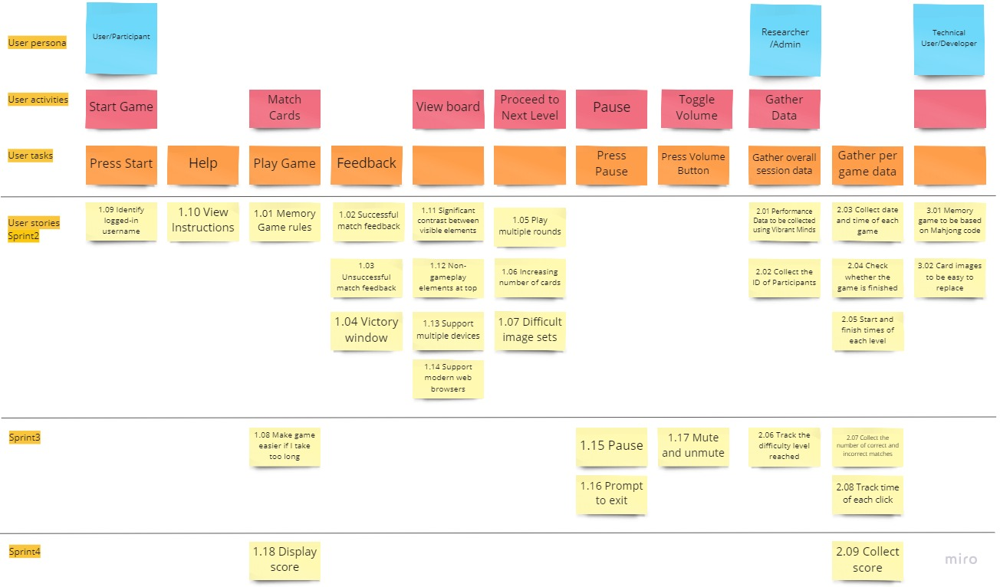

Project Plan and Task Assignment
This page contains our general project plans with an overview of what tasks need to be done by when and the assignment of tasks. The project plan follows the four major deadlines of Sprint 1, Sprint 2, Sprint 3 and Sprint 4.
Team Roles
We will assign roles based on each team members specialty and abilities. We will assign tasks to specific roles depending what kind of task it is, while also making sure work load is balanced between roles. * Front End: Creating the interactable portion of the project that users see and interact with. This is the Memory Game itself. * Back End: Working with the Vibrant-Minds API. * Floaters: Members who can do both. Will assign these members to support other roles depending on task allocation and timeframes.
| # | Participant | Roles |
|---|---|---|
| 1 | Sandy Huang | Front End |
| 2 | Nevil Kandathil | Back End |
| 3 | Kyle Androschuk | Back End |
| 4 | Nebye Berhe | Floater |
| 5 | Kevin Nguyen | Front End |
| 6 | Calvin Chomyc | Floater |
Roles subjected to change as the project progresses
Story Map

Project Plan
Sprint 1: Due September 28th
| Tasks | Assigned To | Complete By |
|---|---|---|
| Create Project Overview | Nebye | September 28 |
| Create Project Glossary | Nebye | September 28 |
| Create Story Boards/Wire Frames | Nebye | September 28 |
| Create User Stories | Calvin/Nevil/Sandy | September 28 |
| List Technical Resources | Nebye | September 28 |
| List Similar Open-Source Products | Nebye | September 28 |
| Create High Level Design Diagrams | Kyle | September 28 |
| Create Project Plan | Calvin/Kevin/Sandy | September 28 |
| Create Story Map | Everyone | September 28 |
| Create Project Roles | Kevin | September 28 |
| Record Reading Minutes | Sandy | September 28 |
Sprint 2: Due October 19th
| Tasks | Assigned To | Complete By |
|---|---|---|
| Address Sprint 1 Feedback | Everyone | October 5 |
| Update Design Document | Everyone | October 5 |
| Update Requirements Document | Everyone | October 5 |
| US 1.01 | Nebye | October 12 |
| US 1.02 | Calvin | October 12 |
| US 1.03 | Calvin | October 12 |
| US 1.04 | Kevin | October 12 |
| US 1.05 | Kevin | October 19 |
| US 1.09 | Nebye | October 19 |
| US 1.10 | Sandy | October 12 |
| US 1.11 | Sandy | October 12 |
| US 1.12 | Kevin | October 12 |
| US 1.13 | Kyle | October 12 |
| US 1.14 | Kyle | October 12 |
| US 2.01 | Calvin | October 19 |
| US 2.02 | Calvin | October 19 |
| US 2.03 | Nevil | October 19 |
| US 2.04 | Nevil | October 19 |
| US 2.05 | Nebye | October 19 |
| US 3.01 | Sandy | October 5 |
| US 3.02 | Nevil | October 12 |
Sprint 3: Due November 16th
| Tasks | Assigned To | Complete By |
|---|---|---|
| Address Sprint 2 Feedback | Everyone | October 26 |
| US 2.06 | Calvin | November 9 |
| US 2.07 | Nevil | November 9 |
| US 2.08 | Kyle | November 16 |
| US 1.06 | Kevin | November 2 |
| US 1.07 | Kevin | November 2 |
| US 1.08 | Kyle | November 9 |
| US 1.15 | Nebye | November 16 |
| US 1.16 | Sandy | November 16 |
| US 1.17 | Sandy | November 9 |
Sprint 4: Due November 27th
| Tasks | Assigned To | Complete By |
|---|---|---|
| Address Sprint 3 Feedback | Everyone | Nov 23 |
| US 1.18 | Kevin | Nov 23 |
| US 2.09 | Nebye | Nov 23 |